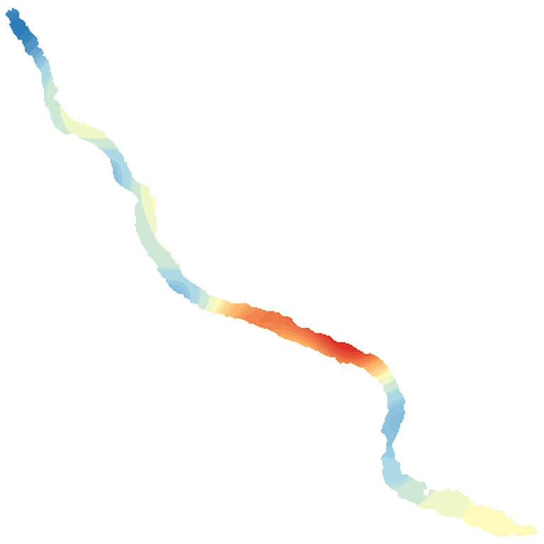

LakeScope › WA
Lake Chelan today
Updated 2026-11-21 - Atlas Labs
Some algae possible, 45°F water, level falling, 2 ft below normal, calm this morning.
Water level
1090.60 ft
USGS gauge 12451200 - 2026-11-21
7-day trend: falling (-0.83 ft). Compared with normal for this date: -2.0 ft (same weeks, 2018-2025).
Water clarity and algae
Some algae possible Last clear view: a few days ago.
Surface temperature
45°F
seen from space on 2026-11-19

Ice
Open - 0% ice cover
Estimate from weather and satellite, not a measurement. Check the ice yourself before going on it.
Weather, next 3 days
| Day | Sky | High / low | Wind | Rain |
|---|---|---|---|---|
| Saturday | Mostly Cloudy | 37 / 33°F | 1 mph E | 14% |
| Sunday | Rain And Snow then Rain And Snow Likely | 38 / 32°F | - mph | 100% |
| Monday | Chance Light Snow | 39 / 33°F | - mph | 37% |
Sunrise 07:15 - sunset 16:16 - Waxing gibbous. National Weather Service.
Get the LakeScope app: alerts and the 3-D view of Lake Chelan